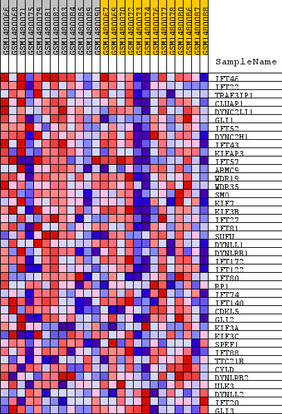
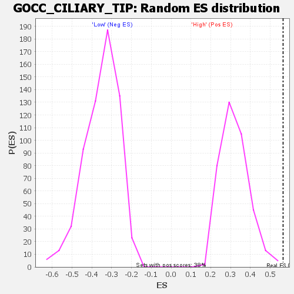

Profile of the Running ES Score & Positions of GeneSet Members on the Rank Ordered List
| Dataset | WG6v3.CPT1A.cls#High_versus_Low.CPT1A.cls#High_versus_Low_repos |
| Phenotype | CPT1A.cls#High_versus_Low_repos |
| Upregulated in class | High |
| GeneSet | GOCC_CILIARY_TIP |
| Enrichment Score (ES) | 0.5651388 |
| Normalized Enrichment Score (NES) | 1.769057 |
| Nominal p-value | 0.002631579 |
| FDR q-value | 1.0 |
| FWER p-Value | 0.985 |
| SYMBOL | TITLE | RANK IN GENE LIST | RANK METRIC SCORE | RUNNING ES | CORE ENRICHMENT | |
|---|---|---|---|---|---|---|
| 1 | IFT46 | IFT46 | 1023 | 0.072 | 0.0096 | Yes |
| 2 | IFT22 | IFT22 | 1113 | 0.069 | 0.0654 | Yes |
| 3 | TRAF3IP1 | TRAF3IP1 | 1163 | 0.068 | 0.1218 | Yes |
| 4 | CLUAP1 | CLUAP1 | 1168 | 0.068 | 0.1804 | Yes |
| 5 | DYNC2LI1 | DYNC2LI1 | 1461 | 0.060 | 0.2175 | Yes |
| 6 | GLI1 | GLI1 | 1611 | 0.057 | 0.2591 | Yes |
| 7 | IFT52 | IFT52 | 1766 | 0.053 | 0.2976 | Yes |
| 8 | DYNC2H1 | DYNC2H1 | 1782 | 0.053 | 0.3431 | Yes |
| 9 | IFT43 | IFT43 | 2478 | 0.042 | 0.3441 | Yes |
| 10 | KIFAP3 | KIFAP3 | 2576 | 0.041 | 0.3748 | Yes |
| 11 | IFT57 | IFT57 | 2724 | 0.039 | 0.4015 | Yes |
| 12 | ARMC9 | ARMC9 | 2767 | 0.039 | 0.4331 | Yes |
| 13 | WDR19 | WDR19 | 3440 | 0.031 | 0.4258 | Yes |
| 14 | WDR35 | WDR35 | 3503 | 0.031 | 0.4496 | Yes |
| 15 | SMO | SMO | 3753 | 0.029 | 0.4618 | Yes |
| 16 | KIF7 | KIF7 | 3801 | 0.028 | 0.4842 | Yes |
| 17 | KIF3B | KIF3B | 3825 | 0.028 | 0.5075 | Yes |
| 18 | IFT27 | IFT27 | 4120 | 0.026 | 0.5147 | Yes |
| 19 | IFT81 | IFT81 | 4201 | 0.025 | 0.5325 | Yes |
| 20 | SUFU | SUFU | 4244 | 0.025 | 0.5518 | Yes |
| 21 | DYNLL1 | DYNLL1 | 4470 | 0.023 | 0.5602 | Yes |
| 22 | DYNLRB1 | DYNLRB1 | 4733 | 0.021 | 0.5651 | Yes |
| 23 | IFT172 | IFT172 | 6614 | 0.011 | 0.4778 | No |
| 24 | IFT122 | IFT122 | 6638 | 0.011 | 0.4863 | No |
| 25 | IFT80 | IFT80 | 7293 | 0.008 | 0.4599 | No |
| 26 | RP1 | RP1 | 8769 | 0.004 | 0.3869 | No |
| 27 | IFT74 | IFT74 | 9618 | 0.001 | 0.3441 | No |
| 28 | IFT140 | IFT140 | 9626 | 0.001 | 0.3447 | No |
| 29 | CDKL5 | CDKL5 | 9878 | 0.000 | 0.3320 | No |
| 30 | GLI2 | GLI2 | 10161 | -0.000 | 0.3179 | No |
| 31 | KIF3A | KIF3A | 10194 | -0.001 | 0.3167 | No |
| 32 | KIF3C | KIF3C | 10381 | -0.001 | 0.3081 | No |
| 33 | SPEF1 | SPEF1 | 10761 | -0.002 | 0.2906 | No |
| 34 | IFT88 | IFT88 | 11204 | -0.004 | 0.2711 | No |
| 35 | TTC21B | TTC21B | 12869 | -0.009 | 0.1935 | No |
| 36 | CYLD | CYLD | 13069 | -0.010 | 0.1923 | No |
| 37 | DYNLRB2 | DYNLRB2 | 14057 | -0.016 | 0.1549 | No |
| 38 | ULK3 | ULK3 | 14559 | -0.019 | 0.1455 | No |
| 39 | DYNLL2 | DYNLL2 | 15683 | -0.028 | 0.1124 | No |
| 40 | IFT20 | IFT20 | 16383 | -0.036 | 0.1077 | No |
| 41 | GLI3 | GLI3 | 17539 | -0.056 | 0.0972 | No |

